FIFO Buffer: Architectural Model
Contents
- Introduction
- Overview of the FIFO Buffer Model
- Description of Processor A, Task 1
- Description of Processor B
- Description of FIFO Buffer
- FIFO Buffer Model Behavior with Processor A Slower Than Processor B
- FIFO Buffer Model Behavior with Processor A Faster Than Processor B
- Description of the almost_full Signal to Manage Data Exchange
- Description of Processor A, Task 2
- Behavior Using The almost_full Signal to Manage Data Transfer
- Modeling Drifting Clocks
- Related Demos
Introduction
This demo shows the architectural modeling of an asynchronous first in, first out (FIFO) buffer and uses the buffer to enable processors with different clocks to manage data exchange.
Overview of the FIFO Buffer Model
A FIFO buffer is a hardware component that is used to store data as a part of communications between processors. This demo shows the structure of the model and how to use the model to regulate the flow of data between processors operating at different clock speeds.
The modeling of the buffer with a more functional implementation is shown in FIFO Buffer: Functional Model.
The model contains two processors and a FIFO Buffer that supports data transfer between the processors. Processor A contains two tasks, the first tasks for communicating with Processor B and a background task. Processor B only contains a task for communication with Processor A. The connections between the processors and the FIFO Buffer include signals for data transfer and signals for control of the data transfer.
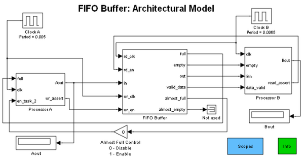Description of Processor A, Task 1
Task 1 for Processor A increments its state, state A, with each trigger. In addition, the processor includes logic to process the full signal asserted by the FIFO Buffer. This logic inverts the full signal to assert the wr_assert signal to the FIFO Buffer. The Integer Delay block represents the latency in the response of Processor A to the full signal.
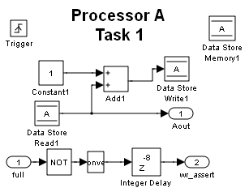Description of Processor B
Processor B accepts the state received from the FIFO Buffer via the Bin port and stores it when triggered. In addition, it includes logic to receive the empty signal from the FIFO Buffer and assert the rd_assert signal.
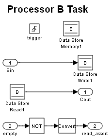Description of FIFO Buffer
The FIFO Buffer subsystem includes the Event-Based Entity Generator and Set Attribute blocks to translate the In signal to an entity. The entity is stored in the FIFO Queue block, released by the Release Gate block, and translated back to a signal by the Get Attribute block. The wr_clk signal and wr_en signal combine to trigger the signal-to-entity translation while the rd_clk and rd_en signals combine to control the entity-to-signal translation. The Compare to Thresholds subsystem contains logic that is triggered by control signals from the rd_clk, rd_en, and wr_clk inports of the FIFO Buffer subsystem as well as the #n signal from the FIFO Queue block. This subsystem, in turn, regulates the flow of entities to ensure that the buffer is not in an overflow or underflow state. The buffer capacity is specified on the FIFO Buffer mask dialog.
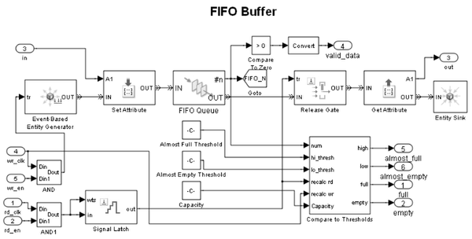FIFO Buffer Model Behavior with Processor A Slower Than Processor B
Running the model so Processor A is clocked slower than Processor B shows the FIFO Buffer block holding data between the instants that Processor A writes until the instants that Processor B reads.
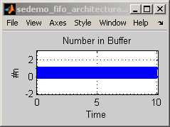 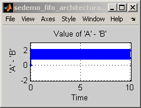 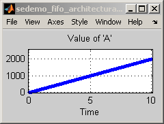Zooming in on the plot of Number in Buffer shows, in detail, that the space usage in the buffer alternates rapidly between 0 and 1.
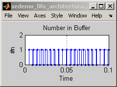FIFO Buffer Model Behavior with Processor A Faster Than Processor B
Running the model so Processor A is being clocked faster than Processor B shows the FIFO Buffer block attempting to limit the number of storage locations to the desired buffer capacity, 256.
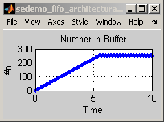 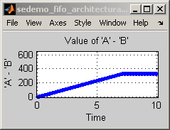 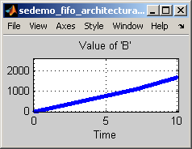Zooming in on the corner of the plot of Number in Buffer shows that the space usage in the FIFO Buffer rises slightly above the desired buffer capacity, 256, to 258.
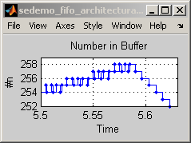 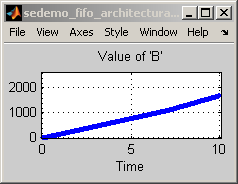The overflow is due to the latency in the response of Processor A to the full signal from the FIFO Buffer. The latency comprises propagation delay, CPU processing delay, and quantization effects. The exact time at which Processor A responds is quantized to synchronize with the clock for Processor A.
Description of the almost_full Signal to Manage Data Exchange
The latency in Processor A's response to the full signal can be managed by using the almost_full signal from the FIFO Buffer. The reduced threshold represented by the Almost Full Threshold block ensures that the overshoot does not result in exceeding the buffer capacity.
The use of the almost_full signal also allows for a more flexible use of the CPU in Processor A. Since Processor A is capable of sending data faster than Processor B can accept, there is unused processing capacity in Processor A. When the space used in the buffer reaches the almost_full threshold, Processor A can switch from the communication task to another, less critical task. This task is represented by the Task 2 subsystem in Processor A.
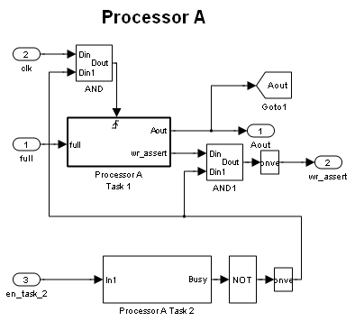Description of Processor A, Task 2
The Processor A Task 2 subsystem includes a Time-Based Entity Generator block that creates the enitity representing the second task in Processor A. The task executes when the Enabled Gate block allows the entity to advance. The two Single Server blocks represent the time to switch context and to execute task 2. When the entity is in the FIFO Queue block, the task is idle. The #n signal disables the firing of the clock for Task 1 and the wr_assert signal, effectively modeling the task switching in Processor A.
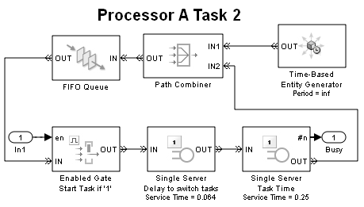Behavior Using The almost_full Signal to Manage Data Transfer
Running the model with the Almost Full Control block enabled shows that when the number in buffer rises slightly above the almost_full threshold, Processor A switches context to task 2, and the number in buffer falls until Processor A resumes task 1, the communications task. The Almost Full Control block is located at the top level of the model.
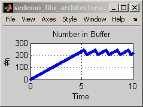 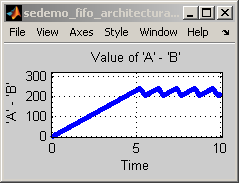 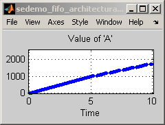 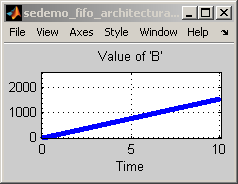The closeup shows the benefit of using the almost_full signal for ensuring the buffer's capacity is not exceeded. In addition, the plots show that Processor A can execute lower priority, non-communication tasks while ensuring that data is always available for Processor B.
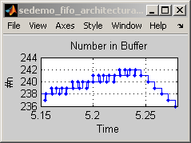The values of state A and state B below show the uninterrupted incrementing of the states until the first time the buffer is almost full. After this point the incrementing of State A is interrupted at regular intervals, confirming the assertion of the almost_full signal and the change of task execution in Processor A.
Processor B can be modified similarly to respond to the almost_empty signal to allow other, non-communication, tasks to be executed while the buffer is almost empty. This will help maximize throughput and allow for efficient scheduling of high and low priority tasks for Processor B.
Modeling Drifting Clocks
This model can be used to model drifting clocks by replacing the existing clocks with clocks from the Asynchronous Clock Domains model.